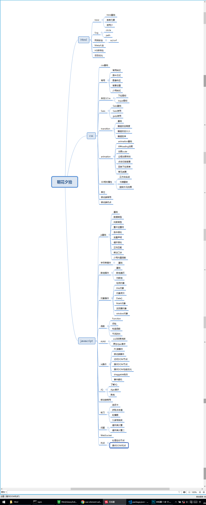

项目首页
本项目主要是记录两年来前端除Vue、React、Node的知识，主要包括Html、Css、Js和Ui部分。 部分讲到了ES6的内容，但是ES6的主要内容是准备放到下个Vue笔记来总结的。 项目的框架用到了H+，做了修改，去除了一些功能。用XMind做了一个项目目录的展示，用PS连接了下

本项目主要是记录两年来前端除Vue、React、Node的知识，主要包括Html、Css、Js和Ui部分。 部分讲到了ES6的内容，但是ES6的主要内容是准备放到下个Vue笔记来总结的。 项目的框架用到了H+，做了修改，去除了一些功能。用XMind做了一个项目目录的展示，用PS连接了下